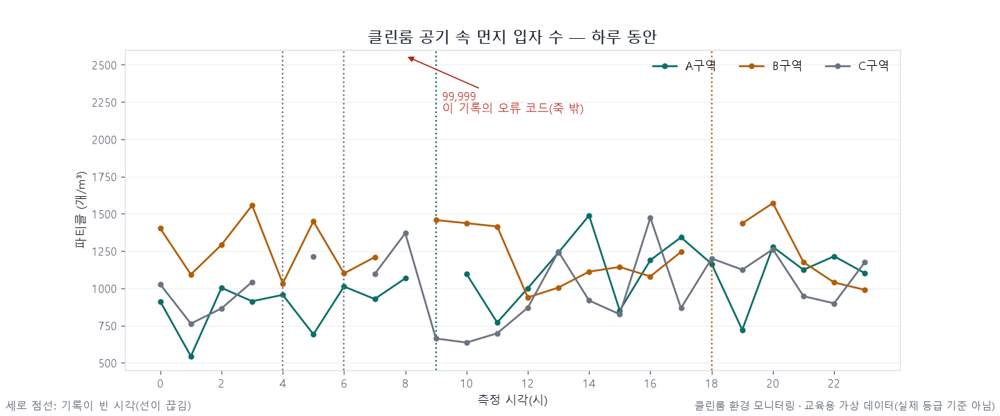

describe()로 빈칸·튀는 값의 흔적을 본다. (노트북 1단계)
5차시

데이터 훑어보기와 정리(EDA)
오늘의 질문: "공장 기록에 섞인 빈칸·중복·튀는 값을 정리하면, 평균은 얼마나 달라질까?"
오늘의 미션 — 입사 다섯째 날, 센서 기록에 빈칸·중복·튀는 값이 섞여 있다. 정리해서 믿을 수 있는 평균 온도를 보고하자. (신입 데이터 담당자의 10일 이야기와 공장·데이터는 모두 교육용 가상이다.)
학습 목표
- 빈칸·중복·튀는 값이 왜 생기고, 평균을 어떻게 틀어지게 하는지 설명할 수 있다.
describe()와isna().sum()으로 문제가 있는 열을 찾을 수 있다.dropna()·drop_duplicates()·범위 조건으로 표를 정리하고, 정리 전후의 행 수와 평균을 비교할 수 있다.- Orange3 Impute로 빈칸을 채워 보고, 튀는 값이 남은 채로 평균을 채우면 생기는 문제를 말할 수 있다.
선수 지식: 4차시 — read_csv, 조건 검색 / 3차시 — Orange Select Rows / 2차시 — Orange Feature Statistics
왜 이걸 배워야 할까?
공장 기록에는 빈칸·중복·튀는 값이 끼어든다. 정리하지 않으면 코드는 돌아가도 숫자가 틀린다.
오늘 쓰는 반 학생 기록에서도, 키를 잘못 적은 값(1720cm) 하나 때문에 평균 키가 276.6cm로 나온다. 정리하면 163.8cm다.
비유 — 가계부
같은 영수증을 두 번 적은 가계부로는 지출을 믿을 수 없다. 분석 전에 데이터를 훑어보고 정리하는 일을 EDA(탐색적 데이터 분석)라고 한다.
지난 시간 복습
Q1. 4차시 기록 100건에서
df[df["설비번호"] == "EQ-02"]를 실행하면 무엇이 나올까?설비번호가 EQ-02인 행만 모인 표(25행). 오늘은 같은 조건 검색으로 평소 범위를 크게 벗어난 값을 찾고 뺀다.
Q2. 파이썬의 조건 검색과 같은 일을 하는 Orange 위젯은?
Select Rows(행 고르기). 오늘 PART 2에서 튀는 값을 거를 때 다시 쓴다.
PART 1 파이썬 — 빈칸·중복·튀는 값 정리하기
개념은 반 학생 기록(week05_easy_class_records.csv, 15행 5열, 생활 예제용 가상 데이터)으로 익힌다.
| 열 | 뜻 |
|---|---|
이름, 반 | 학생 이름과 반 |
키_cm, 몸무게_kg | 키(센티미터), 몸무게(킬로그램). 밑줄 뒤가 단위다 |
수학점수_pt | 수학 점수. _pt는 점수(points)라는 뜻 |
이 표에는 빈칸 3칸, 두 번 적은 학생 1명, 잘못 적은 키 1개가 일부러 섞여 있다. 하나씩 찾아서 정리한다.
숫자 요약 보기 — describe()
describe()는 숫자 열마다 개수·평균·최솟값·최댓값을 한 번에 보여 준다. 2차시 Orange Feature Statistics의 코드판이다.
Python — 읽고 요약하고, 정리 전 값 기억하기 (노트북 1단계)
import pandas as pd
students = pd.read_csv("week05_easy_class_records.csv", encoding="utf-8-sig")
print(students.shape)
print(students.describe())
before_count = len(students)
before_height = round(students["키_cm"].mean(), 1)
print(before_count, before_height)
실행 결과
(15, 5)
키_cm 몸무게_kg 수학점수_pt
count 14.000000 14.000000 15.000000
mean 276.571429 56.428571 83.066667
std 415.497775 7.537132 8.639334
min 155.900000 46.700000 69.000000
25% 160.800000 50.600000 77.000000
50% 166.750000 54.350000 83.000000
75% 171.000000 62.925000 89.000000
max 1720.000000 70.300000 98.000000
15 276.6
count가 14다 → 15명 중 키·몸무게가 하나씩 비어 있다.max1720.0 → 튀는 값이다.mean(평균) 276.6과50%(중앙값, 크기순 한가운데 값) 166.75가 크게 다르다 → 튀는 값 하나가 평균만 끌어올렸다.round(값, 1)은 소수 첫째 자리까지 반올림한다. 정리 전 값은 마지막에 비교하려고 변수에 담아 둔다.std·25%·75%줄과, 다른 출력 끝에 붙는dtype줄은 오늘 보지 않는다. 글자 열(이름·반)은describe()에 나오지 않는다.
찾아보기
검색어 평균 중앙값 차이
ChatGPT에 물어보기 — 복사해서 붙여 넣기
데이터 분석을 처음 배우는 사람에게 평균과 중앙값의 차이를 반 학생 키 예시로 3문장 안에 설명해줘. 키를 잘못 적은 값이 하나 섞였을 때 둘 중 어느 쪽이 더 크게 흔들리는지도 알려줘.빈칸 세고 지우기 — isna(), dropna()
빈칸은 pandas에서 NaN(값 없음)으로 읽힌다. 키를 안 잰 학생은 0cm가 아니다 — 0과 빈칸은 다르다.
isna().sum()— 칸마다 "비었나?"를 확인하고, 열마다 빈칸 개수를 센다.dropna()— 빈칸이 하나라도 있는 행을 지운다. 결과를students =로 다시 저장해야 남는다.
Python — 빈칸 세고 지우기 (노트북 2단계)
print(students.isna().sum())
students = students.dropna()
print(students.shape)
실행 결과
이름 0 반 1 키_cm 1 몸무게_kg 1 수학점수_pt 0 dtype: int64 (12, 5)
빈칸이 있는 3행이 지워져 15행 → 12행이 됐다.
찾아보기
검색어 pandas NaN 뜻
ChatGPT에 물어보기 — 복사해서 붙여 넣기
pandas에서 NaN이 무엇인지 프로그래밍을 처음 배우는 사람에게 쉬운 말로 설명해줘. 숫자 0과 무엇이 다른지도 예를 들어 알려줘.중복 행 찾고 지우기 — duplicated(), drop_duplicates()
duplicated()는 앞의 행과 모든 칸이 같은 행을 찾고, .sum()이 그 개수를 센다. drop_duplicates()는 그 복사본만 지운다.
Python — 중복 행 세고 지우기 (노트북 3단계)
print(students.duplicated().sum())
students = students.drop_duplicates()
print(students.shape)
실행 결과
1 (11, 5)
두 번 적은 박지호의 복사본 1행만 지워져 12행 → 11행이 됐다. 원래 행은 남는다.
튀는 값 찾고 빼기 — 범위 조건
튀는 값(이상값)은 값이 있어서 isna()로는 안 잡힌다. 4차시에 배운 조건 검색으로 찾는다. 사람 키가 250cm를 넘는 일은 거의 없으니, 오늘은 250cm를 넘으면 잘못 적은 값으로 본다.
Python — 튀는 값 찾기 (노트북 4단계)
tall = students[students["키_cm"] > 250]
print(tall)
실행 결과
이름 반 키_cm 몸무게_kg 수학점수_pt 4 정도윤 2반 1720.0 66.0 74
몸무게 66.0kg은 평범하다 → 172.0을 적다가 소수점을 빠뜨린 입력 실수로 볼 수 있다. 지우기 전에 이렇게 다른 열과 함께 본다.
찾을 때 쓴 조건의 반대(<=)로 남길 행만 고르고, 정리 전후 평균을 비교한다.
Python — 튀는 값 빼고 전후 비교하기 (노트북 5단계)
students = students[students["키_cm"] <= 250]
print(students.shape)
after_height = round(students["키_cm"].mean(), 1)
print("정리 전 평균 키:", before_height)
print("정리 후 평균 키:", after_height)
실행 결과
(10, 5) 정리 전 평균 키: 276.6 정리 후 평균 키: 163.8
15행이 10행이 되고, 평균 키가 276.6 → 163.8로 바뀌었다. 튀는 값 하나가 평균을 이만큼 흔들었다.
찾아보기
검색어 센서 측정값 튀는 이유
ChatGPT에 물어보기 — 복사해서 붙여 넣기
공장 센서 기록에 갑자기 튀는 값이 찍히는 흔한 이유를 데이터 분석을 처음 배우는 사람에게 3가지로 설명해줘. 튀는 값이 있으면 곧 불량이라는 뜻인지도 알려줘.반도체 데이터로 확인하기
공장 기록 week05_dirty_process_data.csv(113행 9열, 교육용 가상 데이터)에도 빈칸·중복·튀는 값을 일부러 섞었다.
한 행 = 공정 작업 1건이다. 위 코드에서 표 이름만 students → df로 바뀐다.
공정 지도 위치: ② 산화 ~ ⑤ 증착/이온주입 + 세정 — 이 단계 설비들의 센서 기록이다(1차시 공정 지도 그림은 PART 2에서 다시 본다). 설비 4대가 여러 공정 기록을 함께 남겼다(교육용 가상 기록).
| 열 | 공장에서의 뜻 |
|---|---|
측정시간, 로트번호, 설비번호, 공정명 | 언제, 어느 웨이퍼 묶음을, 어느 기계(EQ-01~EQ-04)에서, 어떤 작업(산화·포토·식각·증착·세정)으로 |
온도_C | 설비 안의 온도. _C = 섭씨 도(℃) |
압력_Pa, 가스유량_slm | 설비 안의 압력(파스칼), 흘려 넣은 가스의 양(slm은 가스 흐름 양의 단위) |
처리시간_sec | 작업에 걸린 초(sec = second) |
합격여부 | 검사 결과. 1 = 합격, -1 = 불합격 |
값과 연습용 기준(온도 295~305, 압력 995~1025, 가스유량 47~53)은 학습용이라 실제 공정 조건으로 해석하지 않는다.
확인 1 — 숫자 요약으로 이상한 열 찾기
Python — 공장 기록 읽고 요약하기 (노트북 6단계)
df = pd.read_csv("week05_dirty_process_data.csv", encoding="utf-8-sig")
print(df.shape)
print(df.describe())
실행 결과
(113, 9)
온도_C 압력_Pa 가스유량_slm 처리시간_sec 합격여부
count 110.000000 111.000000 110.000000 113.000000 111.000000
mean 304.941298 994.361336 51.350000 119.922124 0.585586
std 33.576979 140.252613 19.933578 5.191128 0.814287
min 291.300000 -42.910520 -5.000000 107.300000 -1.000000
25% 298.100000 1007.850000 48.755000 116.500000 1.000000
50% 300.450000 1013.100000 49.940000 119.800000 1.000000
75% 302.500000 1017.500000 51.377500 123.400000 1.000000
max 557.727366 1033.100000 250.000000 132.300000 1.000000
공장 말로 읽기 — 온도 최댓값 557.7도는 평소(300도 안팎)와 동떨어진다. 압력이 음수(-42.9)이고 가스유량에 -5와 250이 있다.
반 기록의 키 1720cm와 같은 "튀는 값 후보"다.
합격여부의 mean 0.59는 1과 -1의 평균일 뿐 합격률(59%)이 아니다.
확인 2 — 빈칸과 중복은 몇 개일까
Python — 빈칸과 중복 세기 (노트북 6단계)
print(df.isna().sum())
print(df.duplicated().sum())
실행 결과
측정시간 0 로트번호 0 설비번호 0 공정명 0 온도_C 3 압력_Pa 2 가스유량_slm 3 처리시간_sec 0 합격여부 2 dtype: int64 3
공장 말로 읽기 — 센서 값(온도·압력·가스유량)과 검사 결과에 빈칸이 모두 10칸 있고, 같은 기록이 두 번 저장된 행이 3개다. 이대로 평균을 내면 믿을 수 없다.
확인 3 — 크게 튀는 온도는 어떤 기록일까
반 기록에서 키 250 초과를 찾았던 것과 같은 모양으로, 온도 400 초과 기록을 찾아 다른 열과 함께 본다.
Python — 튀는 온도 찾기 (노트북 6단계)
hot = df[df["온도_C"] > 400]
print(hot)
실행 결과
측정시간 로트번호 설비번호 공정명 온도_C 압력_Pa 가스유량_slm \
17 2024-03-08 16:00 LOT-0096 EQ-03 식각 540.315405 1009.6 49.59
67 2024-03-23 19:00 LOT-0322 EQ-03 증착 557.727366 1017.0 48.94
처리시간_sec 합격여부
17 120.3 1.0
67 121.1 1.0
공장 말로 읽기 — 540도·557도 기록 2건은 이 기록의 평소 범위(295~305도)에서 크게 벗어났다. 그런데 압력·가스유량은 평범하고 둘 다 합격(1)이다.
키 1720cm·몸무게 66kg처럼 온도 기록 쪽을 먼저 의심해 볼 만하다. 표가 넓으면 pandas가 두 덩어리로 나눠 보여 준다(\는 "다음 줄에 이어짐"). 1.0은 1(합격)과 같다.
정리해서 평균 온도가 얼마나 바뀌는지는 PART 3 실습지 문제 2·3에서 직접 구한다.
실습 따라 하기
학생용 노트북을 위에서 아래로 실행한다. 1~6단계는 코드가 완성돼 있다.
1
숫자 요약 — 반 기록을 읽고
2
빈칸 세고 지우기 —
isna().sum() → dropna(), 15행 → 12행. (노트북 2단계)3
중복 행 지우기 —
duplicated().sum() → drop_duplicates(), 12행 → 11행. (노트북 3단계)4
튀는 값 찾고 빼기 — 키 250 초과를 찾고, 250 이하만 남겨 평균 키를 비교한다. (노트북 4~5단계)
5
공장 기록 훑어보기 — 같은 코드로
df의 요약·빈칸·중복을 보고, 400도 넘는 온도 기록을 찾는다. (노트북 6단계)6
반도체 데이터 실습 — 7단계의 문제 1~3은 PART 3에서 실습지를 보며 푼다. (노트북 7단계)
체크포인트 숫자가 위 결과와 다르면 셀을 건너뛰었거나 같은 셀을 두 번 실행한 것이다. "막혔을 때" 셀대로 위에서부터 다시 실행한다.
PART 2 Orange3 — 빈칸 채우기와 튀는 값
PART 1에서는 빈칸 행을 지웠다. Orange에서는 빈칸을 채우는 방법을 본다. 채울 때 무엇을 조심해야 하는지가 오늘의 핵심이다.
워크플로 열기
- 실습 환경의 폴더 구조를 그대로 둔다(데이터 경로가 폴더 구조에 맞춰져 있다).
- Orange3에서 File → Open을 누르고
week05_1_cleanroom_start.ows를 연다. - 캔버스에 File 위젯 하나와 ①~④ 안내 메모가 보이면 준비가 끝난 것이다. 막히면 같은 폴더의
_done.ows(완성본)를 연다.

위젯 이름표
| 위젯(화면 이름) | 어느 묶음에 있나 | 한국어 뜻 | 오늘 하는 일 |
|---|---|---|---|
File | Data | 파일 불러오기 | 데이터가 이미 연결돼 있다. 더블클릭해 행 수를 확인한다 |
Feature Statistics | Data | 열 통계 | 열마다 Mean(평균)·Median(중앙값)·Min.·Max.·Missing(빈칸 수)을 본다(2차시에 써 봤다) |
Impute | Transform | 빈칸 채우기 | 오늘 새 위젯. 빈칸을 그 열의 평균으로 채운다(Average/Most frequent) |
Select Rows | Transform | 행 고르기 | 조건에 맞는 행만 남긴다(3차시에 써 봤다). 튀는 값을 거른다 |
Data Table | Data | 표 보기 | 채운 뒤·정리 뒤의 표를 눈으로 본다 |
행 수는 어디서 보나 — 위젯 창 맨 아래 상태 표시줄에 들어온 행 수와 내보낸 행 수가 숫자로 보인다. Data Table은 왼쪽 Info 칸에도 행 수가 나온다.
주의 Data Table 뒤에는 위젯을 잇지 않는다. Data Table이 내보내는 것은 화면에서 고른 행뿐이다. 보기 위젯은 File·Impute·Select Rows에서 갈래로 잇는다.
오늘 데이터는 공정 지도의 어디일까

1차시에 본 공정 지도(교육용 단순화, 가상 데이터로 그린 그림). 클린룸은 공정 지도의 ②~⑥(웨이퍼 위에 회로를 만드는 단계)이 이루어지는 FAB의 방이다.
- 워밍업
week05_orange_cleanroom_env.csv— 공정 지도 위치: ②~⑥이 이루어지는 FAB의 클린룸(특정 공정 단계가 아니라 그 방의 공기 기록. ① 웨이퍼 제조는 보통 웨이퍼 제조사에서 하고, ⑦⑧도 별도의 청정 공간을 쓴다). - 반도체
week05_dirty_process_data.csv— 공정 지도 위치: ②~⑤ + 세정 설비의 센서 기록.
워밍업 — 클린룸 환경 기록
반도체는 클린룸(먼지를 극도로 줄인 방)에서 만든다. 수술실을 떠올리면 된다. 회로가 아주 가늘어서, 공기 속 아주 작은 입자(파티클)가 웨이퍼에 내려앉으면 회로가 끊기거나 붙는 결함이 될 수 있다. 그래서 공장은 클린룸의 파티클 수·온도·습도를 계속 재서 기록한다.
week05_orange_cleanroom_env.csv(72행, 교육용 가상 데이터)는 클린룸 세 구역(A·B·C)을 하루 동안 24번씩 잰 기록이다.
| 열 | 뜻 |
|---|---|
측정시간, 구역 | 언제, 어느 구역에서 쟀나 |
파티클_count_per_m3 | 공기 1세제곱미터(m³) 안의 입자 개수. 평소 1,000개 안팎(실제로는 일정 크기 이상 입자만 센다. 이 데이터는 크기를 정하지 않은 교육용 값이다) |
온도_C, 습도_pct | 방 온도(섭씨 도), 습도(퍼센트) |
차압_Pa | 방 안과 바깥의 공기 압력 차이(파스칼). 안쪽을 바깥보다 높게(양수) 유지해야 바깥 먼지가 들어오지 않는다. 평소 12 안팎 |

클린룸 세 구역의 하루 먼지 입자 수. 08:00 B구역 기록의 99,999는 이 기록의 오류 코드(축 밖), 세로 점선은 기록이 빈 시각이다(교육용 가상 데이터, 실제 등급 기준 아님).
그래프의 99,999는 실제 먼지 수가 아니다. 이 기록에서는 센서가 측정에 실패하면 99,999를 남기도록 정해 두었다(오류 코드). 이 값을 그대로 두고 빈칸을 채우면 무슨 일이 생기는지 Orange로 본다.
찾아보기
검색어 반도체 클린룸 왜 필요
ChatGPT에 물어보기 — 복사해서 붙여 넣기
반도체 공장에 클린룸이 왜 필요한지 반도체를 처음 배우는 사람에게 3문장으로 설명해줘. 공기 속 먼지 입자를 어떻게 관리하는지도 알려줘.1
정리 전 훑어보기 — 왼쪽 Data 묶음에서
Feature Statistics를 끌어 와 File과 잇고 더블클릭한다.
Missing 칸에서 파티클 4 · 습도 3 · 차압 2, 파티클 Max 99999, 차압 Min -5.0을 찾는다.
2
빈칸 채우기 — 왼쪽 Transform 묶음에서
Impute를 끌어 와 File과 잇고 더블클릭한다. 위쪽 Default Method에서 Average/Most frequent를 고른다
(숫자 열은 평균, 글자 열은 가장 흔한 값으로 채운다는 뜻).
Impute에 Data Table을 이어 연다. 채운 칸에는 표시가 없으니, 파티클_count_per_m3 열 머리글을 눌러 큰 값부터 정렬하면 99999 바로 아래에 똑같은 값 4개가 모여 보인다. 그 값이 빈칸에 채워진 숫자다.
채운 값을 보자 빈칸 4칸이 모두 2543.66으로 채워졌다. 평소 값(1,000 안팎, 오류 코드를 뺀 평균 1,089.1)의 2배가 넘는다.
Impute는 그 열의 평균으로 채우는데, 평균 안에 99,999가 들어가 평균이 끌려 올라갔기 때문이다.
튀는 값이 남은 채로 평균을 내 빈칸을 채우면, 채운 값도 엉터리가 된다 — 그래서 채우기 전에 튀는 값부터 확인한다.
3
튀는 값 거르기 — Transform 묶음의
Select Rows를 Impute에 잇는다. 창에서 Add Condition을 누르고 열 → 연산자 → 숫자 순서로 고르는 일을 조건마다 되풀이해 두 줄을 넣는다:
파티클_count_per_m3 is below 10000, 차압_Pa is at least 0. Select Rows에 Feature Statistics를 하나 더 잇는다.
읽을 것 — 72행 중 오류 코드 행과 음수 차압 행이 빠져 70행이 남는다. 그런데 정리 후 파티클 Max가 2543.66, 바로 아까 채운 값이다. 99,999는 지웠지만, 그 값으로 계산해 채운 숫자는 표에 그대로 남았다. 튀는 값을 먼저 확인하고 채웠다면 채운 값이 이렇게 끌려 올라가지 않았다.
차압 -5.0은 바깥 공기가 밀려 들어올 수 있는 방향이라, 센서 오류인지 실제 상황인지 따로 확인할 값이다. 오늘은 평균 계산에서만 뺀다.
반도체 — 지저분한 공장 기록 정리하기
강사 화면 보며 확인 이 절은 강사가 화면으로 보여 준다. 학생은 따라 누르지 않고 순서와 숫자만 눈으로 확인한다. 직접 해 보는 것은 PART 3 실습지 문제 4에서 한 번 한다.
같은 위젯으로 PART 1의 공장 기록(113행)을 정리한다. File → Open으로 week05_2_dirty_process_start.ows를 연다.
1
정리 전 훑어보기 — File에
Feature Statistics를 잇는다. 온도_C의 Missing 3, Max 557.73,
압력_Pa Min -42.91, 가스유량_slm Min -5 · Max 250을 찾는다. PART 1의 describe()와 같은 숫자다.
2
빈칸 채우기 + 결과 빈 행 지우기 — File에
Impute를 잇고 Default Method를 Average/Most frequent로 고른다.
그다음 아래쪽 Individual Attribute Settings 칸의 왼쪽 열 목록에서 합격여부를 누르고, 오른쪽 버튼 중 Remove instances with unknown values를 고른다. 검사 결과는 지어내 채우면 안 되기 때문이다.주의 같은 이름의 버튼이 위쪽 Default Method 칸에도 있다. 위쪽에서 Remove instances with unknown values를 누르면 빈칸이 하나라도 있는 행이 모두 지워져 98행이 남는다. 반대로 아래쪽 합격여부 설정을 빠뜨리면 합격여부 빈칸 2개가 "합격(1)"으로 채워져 107행이 남는다. 위쪽은 Average/Most frequent, 아래쪽은 합격여부만 Remove instances다.

3
평소 범위를 크게 벗어난 값 거르기 — Impute에
Select Rows를 잇고 Add Condition으로 조건 네 줄을 넣는다(가스유량은 같은 열을 두 번 넣는다):
온도_C is at most 400, 압력_Pa is at least 0, 가스유량_slm is at least 0, 가스유량_slm is below 200.
4
정리 결과 읽기 — Select Rows에
Data Table과 Feature Statistics를 각각 잇는다.
Data Table 왼쪽 Info에서 105행, Feature Statistics에서 온도_C Mean 300.75(화면에 300.7로 보일 수 있다)를 읽는다.

Orange 흐름은 113행 → Impute 뒤 111행(합격여부 빈 2행 삭제) → Select Rows 뒤 105행이다. 정리 후 온도는 Min 291.3, Max 310.9로 평소 범위 근처에 모였다. 압력 빈칸은 음수 값에 끌려 내려간 평균(994.36)으로 채워졌다 — 클린룸에서 본 것과 같은 일이다.
파이썬 결과와 비교
| 파이썬(실습지 문제 2·3) | Orange(오늘 PART 2) | |
|---|---|---|
| 빈칸 | 빈칸이 있는 행을 지운다 | 측정값 빈칸은 평균으로 채우고, 합격여부가 빈 행만 지운다 |
| 중복 행 | 지운다 | 남긴다(중복을 지우는 위젯을 넣지 않았다) |
| 튀는 값 | 범위 조건으로 뺀다 | Select Rows로 뺀다 |
| 남은 행 / 평균 온도 | ○○행 / ○○○.○도 (실습지에서 직접 구한다) | 105행 / 300.75도 |
한 문장으로 — 파이썬은 빈칸 행과 중복 행을 지우고, Orange는 빈칸을 평균으로 채우고 중복을 남긴다. 무엇을 지우고 무엇을 채웠는지에 따라 남는 행 수와 평균이 달라진다. 두 도구의 결과가 같지 않은 것이 정상이다.
PART 3 실습지
5차시 실습지를 열고 순서대로 푼다.
- 문제 1~3 (파이썬) — 노트북 7단계의
____를 채운다. 공장 기록을 요약하고, 빈칸·중복 행을 지우고, 교육용 기준 밖의 값을 뺀 뒤 평균 온도를 비교한다. - 문제 4 (Orange) —
week05_2_dirty_process_start.ows에서 위젯을 이어 105행과 평균 온도를 읽고, 문제 3과 다른 이유를 한 줄로 쓴다. - 문제 5 (해석 문장) — 정리 전후 평균 온도를 한 문장으로 보고한다.
다 풀면 실습지의 "정답 보기"로 확인하고, 문제 5의 문장을 옆 사람에게 읽어 준다.
핵심 용어 카드
결측값
Missing Value (NaN)
- 한 줄 설명
- 값이 있어야 할 칸이 비어 있는 것. pandas에서는
NaN, Orange에서는?로 보인다. - 쉬운 비유
- 출석부에 체크도 결석 표시도 없는 칸.
- 데이터에서의 예
df.isna().sum()→ 온도 3, 압력 2, 가스유량 3, 합격여부 2- 자주 하는 오해
- 빈칸을 0과 같다고 생각한다. 0은 "잰 값이 0", 빈칸은 "기록이 없음"이다.
중복 행
Duplicate
- 한 줄 설명
- 모든 칸이 똑같은 행이 두 번 이상 저장된 것.
- 쉬운 비유
- 가계부에 같은 영수증을 두 번 적은 것.
- 데이터에서의 예
df.duplicated().sum()→ 3- 자주 하는 오해
- 중복 3건을 지우면 6행이 사라진다고 생각한다. 복사본 3행만 지워진다.
튀는 값(이상값)
Outlier
- 한 줄 설명
- 다른 값들과 동떨어지게 큰 값이나 작은 값.
- 쉬운 비유
- 건강검진에서 혈압 300 — 지우기 전에 다시 재고 다른 결과와 함께 본다.
- 데이터에서의 예
- 키 1720cm, 온도 557.7도, 클린룸 기록의 파티클 99,999(이 기록에서 정한 센서 오류 코드)
- 자주 하는 오해
isna()로 잡힌다고 생각한다. 값이 있으므로 범위 조건으로 찾는다.
빈칸 채우기
Impute
- 한 줄 설명
- 빈칸을 지우지 않고 어떤 값(오늘은 그 열의 평균)으로 채우는 것.
- 쉬운 비유
- 결석한 날 점수를 반 평균으로 적어 두기.
- 데이터에서의 예
- 클린룸 파티클 빈칸 4칸 → 2543.66
- 자주 하는 오해
- 채운 값은 늘 믿을 만하다고 생각한다. 튀는 값이 섞인 평균으로 채우면 채운 값도 튄다.
데이터
week05_easy_class_records.csv— 15행 5열, 생활 예제용 가상 데이터(PART 1). 빈칸 3칸, 중복 1행, 잘못 적은 키 1개.week05_orange_cleanroom_env.csv— 72행 6열, 교육용 가상 데이터(PART 2 워밍업, Orange는orange/폴더의.tab을 연다). 빈칸: 파티클 4 · 습도 3 · 차압 2, 파티클 99,999 1행, 차압 -5.0 1행. 공정 지도 위치: ②~⑥이 이루어지는 FAB의 클린룸.week05_dirty_process_data.csv— 113행 9열, 교육용 가상 데이터(PART 1·2·3). 빈칸 10칸, 중복 3행, 튀는 값 6건. 공정명 오타 3건과 형식이 다른 측정시간 값 2건도 있지만 오늘은 다루지 않는다. 공정 지도 위치: ②~⑤ + 세정 설비의 센서 기록.- 열 설명: 데이터 설명서
주의할 점 & 자주 발생하는 오류
오류 1 — 지운 결과를 저장하지 않음
students.dropna()만 쓰면 오류 없이 지나가지만 print(students.shape)는 그대로 (15, 5)다.
students = students.dropna()처럼 앞에 =로 다시 저장한다.
오류 2 — isna 뒤 괄호 빠뜨림
students.isna.sum() → AttributeError: 'function' object has no attribute 'sum'.
isna().sum()처럼 함수마다 ()를 붙인다.
오류 3 — 조건 방향 반대 남길 행을 고를 때
clean[clean["온도_C"] >= 400]처럼 부등호를 거꾸로 쓰면 오류 없이 (2, 9)가 나온다.
정상 행이 다 지워지고 튀는 값 2행만 남은 것이다. "찾을 때는 >, 남길 때는 그 반대 <="를 떠올린다.
빈칸을 그대로 두고 실행하면 노트북의
____를 채우지 않으면 AttributeError: 'Series' object has no attribute '____'(Series = 표의 열 하나)나
SyntaxError: invalid syntax. Perhaps you forgot a comma?가 난다. 쉼표 문제가 아니라 빈칸을 아직 안 채웠다는 뜻이다.
결과 정리 & 퀴즈
- 반 기록: 15행 → 빈칸 행 지우기 12 → 중복 지우기 11 → 튀는 값 빼기 10행. 평균 키 276.6 → 163.8.
- 공장 기록(파이썬): 빈칸 행 → 중복 행 → 범위 밖 행 순서로 지웠다. 남은 행 수와 평균 온도는 실습지 문제 2·3에서 직접 구한 값이다(아래 "핵심 질문 → 데이터 연결"에서 확인).
- 공장 기록(Orange): 빈칸을 평균으로 채우고 중복을 남겨 105행, 평균 온도 300.75. 정리 방법이 달라 숫자가 다른 것이 정상이다.
- 클린룸: 99,999가 남은 채로 평균을 내 채웠더니 빈칸이 2543.66으로 채워졌다 → 채우기 전에 튀는 값부터 확인한다.
오늘의 반도체 이해 포인트
- 반도체는 클린룸(먼지를 극도로 줄인 방)에서 만들고, 공기 속 입자(파티클)·온도·습도를 계속 감시한다. 입자가 웨이퍼에 내려앉으면 가는 회로에 결함이 생길 수 있기 때문이다.
- 센서 기록에는 빈칸과 99,999 같은 오류 코드가 섞인다. 정리한 뒤에야 평균을 믿을 수 있다.
복습 문제 전체는 quiz.json(수업 후 자율 복습)에 있다. 아래는 그중 일부다.
Q1. (객관식)
describe() 결과에서 키_cm의 count가 14였다(전체 15명). 이것이 뜻하는 것은?정답: B.
count는 빈칸이 아닌 값의 개수다. 15 − 14 = 1칸이 비어 있다.Q2. (객관식) 클린룸 기록에서 Impute로 파티클 빈칸을 평균으로 채웠더니 2543.66이 들어갔다. 평소 값은 1,000 안팎이다. 왜 이렇게 큰 값이 들어갔을까?
정답: B. 튀는 값이 남은 채로 평균을 내면 채운 값도 튄다. 그래서 채우기 전에 튀는 값부터 확인한다.
Q3. (서술) 실습지 문제 3에서 정리 전과 정리 후의 평균 온도가 달랐다. 왜 달라졌는지 한 문장으로 설명해 보자.
"정리 전 304.9도, 정리 후 300.6도다. 540도·557도처럼 이 기록의 평소 범위(295~305도)에서 크게 벗어난 온도 2개 등 튀는 값이 평균을 끌어올리고 있었다."
AI로 한 걸음 더 — 질문하고 코드 받아보기
ChatGPT에 아래처럼 물어 받은 코드의 예시다. for는 3차시에 배운 반복문이다. 노트북 8단계에서 실행해 확인 2의 isna().sum() 결과와 같은지 비교한다.
ChatGPT에 물어보기 — 복사해서 붙여 넣기
week05_dirty_process_data.csv를 pandas로 읽어서(encoding="utf-8-sig"), 열마다 빈칸 개수와 빈칸 비율(%)을 한 줄씩 출력하는 짧은 코드를 만들어 줘.Python — AI가 만들어 준 코드 예시 (노트북 8단계)
import pandas as pd
data = pd.read_csv("week05_dirty_process_data.csv", encoding="utf-8-sig")
for col in data.columns:
count = data[col].isna().sum()
rate = count / len(data) * 100
print(f"{col}: 빈칸 {count}개 ({rate:.1f}%)")
실행 결과
측정시간: 빈칸 0개 (0.0%) 로트번호: 빈칸 0개 (0.0%) 설비번호: 빈칸 0개 (0.0%) 공정명: 빈칸 0개 (0.0%) 온도_C: 빈칸 3개 (2.7%) 압력_Pa: 빈칸 2개 (1.8%) 가스유량_slm: 빈칸 3개 (2.7%) 처리시간_sec: 빈칸 0개 (0.0%) 합격여부: 빈칸 2개 (1.8%)
AI 코드를 다룰 때 직접 실행해 숫자를 확인하고, 경로와
encoding="utf-8-sig"를 맞춘다. 회사의 실제 데이터는 AI에 붙여 넣지 않는다.
과제(다음 차시까지)
과제 1 — 가스유량 평균도 비교하기
실습지 문제 3과 같은 모양으로, 정리 전
df와 정리 후 clean의 평균 가스유량(가스유량_slm)을 round(값, 1)로 출력하고 한 문장으로 비교한다.
과제 2 — 내 말로 설명하기(코드 없음)
"빈칸을 지우는 방법과 채우는 방법은 각각 무엇이 좋고 무엇이 위험한가"를 클린룸 2543.66 장면을 예로 들어 두세 문장으로 적는다.
핵심 질문 → 데이터 연결
- 질문: 공장 기록에 섞인 빈칸·중복·튀는 값을 정리하면, 평균은 얼마나 달라질까?
- 답(파이썬): 실습지 문제 2·3에서 직접 구한다.
113행을 정리해 95행이 남았고, 평균 온도는 304.9 → 300.6으로 약 4.3도 내려갔다.
- 답(Orange): 빈칸을 채우고 중복을 남기면 105행, 평균 온도 300.75. 무엇을 지우고 채우는지에 따라 결과가 달라진다.
다음 차시 예고
6차시에는 정리한 숫자를 그래프로 본다. 표로는 안 보이던 공정의 모습을 막대·히스토그램·산점도로 본다. Orange에서는 웨이퍼 위 어디에 불량이 생겼는지 웨이퍼 맵을 그린다.
다음 날 미션 — 내일 회의에서 쓸 그래프 3장을 만들자: 설비별 건수, 온도 분포, 온도와 두께의 관계.